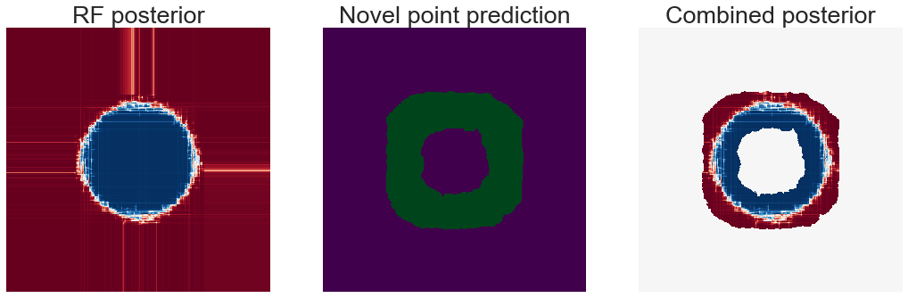

Novelty detection + posteriors
Novelty detection + posteriors¶
import matplotlib.pyplot as plt
import numpy as np
import seaborn as sns
from numpy.random import normal, shuffle, uniform
from sklearn.datasets import make_blobs
from sklearn.ensemble import IsolationForest, RandomForestClassifier
from sklearn.neighbors import LocalOutlierFactor
def get_ece(predicted_posterior, predicted_label, true_label, num_bins=40):
bin_size = 1 / num_bins
total_sample = len(true_label)
posteriors = predicted_posterior.max(axis=1)
score = 0
for bin in range(num_bins):
indx = np.where(
(posteriors > bin * bin_size) & (posteriors <= (bin + 1) * bin_size)
)[0]
acc = (
np.nan_to_num(np.mean(predicted_label[indx] == true_label[indx]))
if indx.size != 0
else 0
)
conf = np.nan_to_num(np.mean(posteriors[indx])) if indx.size != 0 else 0
score += len(indx) * np.abs(acc - conf)
score /= total_sample
return score
def hellinger(p, q):
"""Hellinger distance between two discrete distributions.
Same as original version but without list comprehension
"""
return np.mean(np.sqrt(np.sum((np.sqrt(p) - np.sqrt(q)) ** 2, axis=1)) / np.sqrt(2))
def _generate_2d_rotation(theta=0):
R = np.array([[np.cos(theta), np.sin(theta)], [-np.sin(theta), np.cos(theta)]])
return R
def _clean_Xy(X, y):
"""
Remove first junk index from X and y and randomly shuffle the entries.
Parameters
----------
X : array of shape [n_samples+1, x]
The generated samples.
y : array of shape [n_samples+1]
The integer labels for cluster membership of each sample.
Returns
-------
X : array of shape [n_samples, x]
The generated samples.
y : array of shape [n_samples]
The integer labels for cluster membership of each sample.
"""
index = np.arange(1, y.size)
shuffle(index)
return (X[index, :], y[index])
def _length(x):
"""
length function with error catching for ints/floats.
"""
try:
return len(x)
except TypeError:
return 1
def generate_gaussian_parity(
n_samples,
centers=None,
class_label=None,
cluster_std=0.25,
bounding_box=(-1.0, 1.0),
angle_params=None,
random_state=None,
):
"""
Generate 2-dimensional Gaussian XOR distribution.
(Classic XOR problem but each point is the
center of a Gaussian blob distribution)
Parameters
----------
n_samples : int
Total number of points divided among the four
clusters with equal probability.
centers : array of shape [n_centers,2], optional (default=None)
The coordinates of the ceneter of total n_centers blobs.
class_label : array of shape [n_centers], optional (default=None)
class label for each blob.
cluster_std : float, optional (default=1)
The standard deviation of the blobs.
bounding_box : tuple of float (min, max), default=(-1.0, 1.0)
The bounding box within which the samples are drawn.
angle_params: float, optional (default=None)
Number of radians to rotate the distribution by.
random_state : int, RandomState instance, default=None
Determines random number generation for dataset creation. Pass an int
for reproducible output across multiple function calls.
Returns
-------
X : array of shape [n_samples, 2]
The generated samples.
y : array of shape [n_samples]
The integer labels for cluster membership of each sample.
"""
if random_state != None:
np.random.seed(random_state)
if centers == None:
centers = np.array([(-0.5, 0.5), (0.5, 0.5), (-0.5, -0.5), (0.5, -0.5)])
if class_label == None:
class_label = [0, 1, 1, 0]
blob_num = len(class_label)
# get the number of samples in each blob with equal probability
samples_per_blob = np.random.multinomial(
n_samples, 1 / blob_num * np.ones(blob_num)
)
X = np.zeros((1, 2), dtype=float)
y = np.zeros((1), dtype=float)
ii = 0
for center, sample in zip(centers, samples_per_blob):
X_, _ = make_blobs(
n_samples=sample * 10,
n_features=2,
centers=[center],
cluster_std=cluster_std,
)
col1 = (X_[:, 0] > bounding_box[0]) & (X_[:, 0] < bounding_box[1])
col2 = (X_[:, 1] > bounding_box[0]) & (X_[:, 1] < bounding_box[1])
X_ = X_[col1 & col2]
X = np.concatenate((X, X_[:sample, :]), axis=0)
y_ = np.array([class_label[ii]] * sample)
y = np.concatenate((y, y_), axis=0)
ii += 1
X, y = X[1:], y[1:]
if angle_params != None:
R = _generate_2d_rotation(angle_params)
X = X @ R
return X, y.astype(int)
def pdf(x, cov_scale=0.25):
mu01 = np.array([-0.5, 0.5])
mu02 = np.array([0.5, -0.5])
mu11 = np.array([0.5, 0.5])
mu12 = np.array([-0.5, -0.5])
cov = cov_scale * np.eye(2)
inv_cov = np.linalg.inv(cov)
p01 = (np.exp(-0.5 * (x - mu01) @ inv_cov @ (x - mu01).T)) / (
2 * np.pi * np.sqrt(np.linalg.det(cov))
)
p02 = (np.exp(-0.5 * (x - mu02) @ inv_cov @ (x - mu02).T)) / (
2 * np.pi * np.sqrt(np.linalg.det(cov))
)
p11 = (
np.exp(-0.5 * (x - mu11) @ inv_cov @ (x - mu11).T)
+ np.exp(-0.5 * (x - mu12) @ inv_cov @ (x - mu12).T)
) / (2 * np.pi * np.sqrt(np.linalg.det(cov)))
p12 = (np.exp(-0.5 * (x - mu12) @ inv_cov @ (x - mu12).T)) / (
2 * np.pi * np.sqrt(np.linalg.det(cov))
)
return np.max([p01, p02]) / (p01 + p02 + p11 + p12)
def sparse_parity(n_samples, p_star=3, p=20):
X = np.random.uniform(low=-1, high=1, size=(n_samples, p))
y = np.sum(X[:, :p_star] > 0, axis=1) % 2
return X, y.astype(int)
def gaussian_sparse_parity(
n_samples,
centers=None,
class_label=None,
p_star=3,
p=20,
cluster_std=0.25,
center_box=(-1.0, 1.0),
random_state=None,
):
if random_state != None:
np.random.seed(random_state)
if centers == None:
if p_star == 2:
centers = np.array([(-0.5, 0.5), (0.5, 0.5), (-0.5, -0.5), (0.5, -0.5)])
else:
centers = np.array(
[
(0.5, 0.5, 0.5),
(-0.5, 0.5, 0.5),
(0.5, -0.5, 0.5),
(0.5, 0.5, -0.5),
(0.5, -0.5, -0.5),
(-0.5, -0.5, 0.5),
(-0.5, 0.5, -0.5),
(-0.5, -0.5, -0.5),
]
)
if class_label == None:
class_label = 1 - np.sum(centers[:, :p_star] > 0, axis=1) % 2
blob_num = len(class_label)
# get the number of samples in each blob with equal probability
samples_per_blob = np.random.multinomial(
n_samples, 1 / blob_num * np.ones(blob_num)
)
X, y = make_blobs(
n_samples=samples_per_blob,
n_features=p_star,
centers=centers,
cluster_std=cluster_std,
)
for blob in range(blob_num):
y[np.where(y == blob)] = class_label[blob]
if p > p_star:
X_noise = np.random.uniform(
low=center_box[0], high=center_box[1], size=(n_samples, p - p_star)
)
X = np.concatenate((X, X_noise), axis=1)
return X, y.astype(int)
def trunk_sim(n_samples, p_star=3, p=3, center_box=(-1.0, 1.0), random_state=None):
samples_per_class = np.random.multinomial(n_samples, 1 / 2 * np.ones(2))
mean = 1.0 / np.sqrt(np.arange(1, p_star + 1, 1))
X = np.concatenate(
(
np.random.multivariate_normal(
mean, np.eye(p_star), size=samples_per_class[0]
),
np.random.multivariate_normal(
-mean, np.eye(p_star), size=samples_per_class[1]
),
),
axis=0,
)
y = np.concatenate(
(np.zeros(samples_per_class[0]), np.ones(samples_per_class[1])), axis=0
)
if p > p_star:
X_noise = np.random.uniform(
low=center_box[0], high=center_box[1], size=(n_samples, p - p_star)
)
X = np.concatenate((X, X_noise), axis=1)
return X, y.astype(int)
def generate_spirals(
n_samples, n_class=2, noise=0.3, bounding_box=(-1.0, 1.0), random_state=None,
):
"""
Generate 2-dimensional spiral simulation
Parameters
----------
n_samples : int
Total number of points divided among the individual spirals.
n_class : array of shape [n_centers], optional (default=2)
Number of class for the spiral simulation.
noise : float, optional (default=0.3)
Parameter controlling the spread of each class.
bounding_box : tuple of float (min, max), default=(-1.0, 1.0)
The bounding box within which the samples are drawn. (currently works
for only 2 classes)
random_state : int, RandomState instance, default=None
Determines random number generation for dataset creation. Pass an int
for reproducible output across multiple function calls.
Returns
-------
X : array of shape [n_samples, 2]
The generated samples.
y : array of shape [n_samples]
The integer labels for cluster membership of each sample.
"""
if random_state != None:
np.random.seed(random_state)
X = []
y = []
if n_class == 2:
turns = 2
elif n_class == 3:
turns = 2.5
elif n_class == 5:
turns = 3.5
elif n_class == 7:
turns = 4.5
else:
raise ValueError("sorry, can't currently support %s classes " % n_class)
mvt = np.random.multinomial(n_samples, 1 / n_class * np.ones(n_class))
if n_class == 2:
lim = max(np.abs(bounding_box[0]), np.abs(bounding_box[1]))
r = np.random.uniform(0, lim, size=int(n_samples / n_class))
r = np.sort(r)
t = np.linspace(
0, np.pi * 4 * turns / n_class, int(n_samples / n_class)
) + np.random.normal(0, noise, int(n_samples / n_class))
dx = r * np.cos(t)
dy = r * np.sin(t)
X.append(np.vstack([dx, dy]).T)
X.append(np.vstack([-dx, -dy]).T)
y += [0] * int(n_samples / n_class)
y += [1] * int(n_samples / n_class)
else:
for j in range(1, n_class + 1):
r = np.linspace(0.01, 1, int(mvt[j - 1]))
t = np.linspace(
(j - 1) * np.pi * 4 * turns / n_class,
j * np.pi * 4 * turns / n_class,
int(mvt[j - 1]),
) + np.random.normal(0, noise, int(mvt[j - 1]))
dx = r * np.cos(t)
dy = r * np.sin(t)
dd = np.vstack([dx, dy]).T
X.append(dd)
y += [j - 1] * int(mvt[j - 1])
return np.vstack(X), np.array(y).astype(int)
def generate_ellipse(
n_samples,
width=(1, 0.75),
height=None,
offsets=None,
sigma=0.1,
bounding_box=(-1.0, 1.0),
random_state=None,
):
"""
Generate axis-aligned ellipse simulation.
(Categorization between ellipses)
Parameters
----------
n_samples : int
Total number of points in simulation, evenly divided between ellipses.
width : ndarray-like of shape [n_ellipses, 2], optional (default=(1, 0.75))
Width of ellipses, measured from the origin to right bound.
width and height must be able to be broadcasted to the same size.
height : ndarray-like of shape [n_ellipses, 2], optional (default=None)
Height of ellipses, measured from the origin to upper bound.
width and height must be able to be broadcasted to the same size.
If None, height=width(concentric circles simulation)
offsets : ndarray-like of shape [n_ellipses, 2], optional (default=None)
Centers of the ellipses.
If None, all ellipses are centered at (0, 0)
sigma : float, optional (default=0.1)
Parameter controlling the width of the shapes.
bounding_box : tuple of float (min, max), default=(-1.0, 1.0)
The bounding box within which the samples are drawn.
random_state : int, RandomState instance, default=None
Determines random number generation for dataset creation. Pass an int
for reproducible output across multiple function calls.
Returns
-------
X : array of shape [n_samples, 2]
The generated samples.
y : array of shape [n_samples]
The integer labels for cluster membership of each sample.
"""
if random_state is None:
np.random.seed(random_state)
width = np.asarray(width)
if height is None:
height = width
elif type(height) == int or type(height) == float:
height = np.ones_like(width) * height
else:
height = np.asarray(height)
if offsets is not None:
offsets = np.asarray(offsets)
n_ellipses = width.size
X = np.empty((1, 2))
y = np.array(1)
for n in range(n_ellipses):
size = n_samples / n_ellipses
if type(size) == float:
size = int(size)
if n == n_ellipses:
size = size + 1
t = uniform(0, 2 * np.pi, 10 * size)
a = width[n] + normal(0, sigma, 10 * size)
b = height[n] + normal(0, sigma, 10 * size)
xn = np.column_stack((a * np.cos(t), b * np.sin(t)))
if offsets is not None:
xn = xn + offsets[n, :]
col1 = (xn[:, 0] > bounding_box[0]) & (xn[:, 0] < bounding_box[1])
col2 = (xn[:, 1] > bounding_box[0]) & (xn[:, 1] < bounding_box[1])
xn = xn[col1 & col2]
xn = xn[:size]
X = np.append(X, xn, axis=0)
y = np.append(y, np.ones(size, dtype=int) * n)
X, y = _clean_Xy(X, y)
return (X, y)
def generate_sinewave(
n_samples,
offsets=(0, 0.5),
height=None,
n_peaks=2,
sigma=0.1,
bounding_box=(-1.0, 1.0),
random_state=None,
):
"""
Generate sinewave simulation.
(Categorization between offset/scaled sine waves)
Parameters
----------
n_samples : int
Total number of points divided between sine waves.
offsets : ndarray-like of shape [n_waves], optional (default: (0, 0.5))
Horizontal offsets for the waves, as multiples of pi.
height : ndarray-like of shape [n_waves], optional (default=None)
Peak height of sine waves.
If None, all waves will have a height of 1.
n_peaks : int, optional (default=2)
Number of peaks for each sine wave.
sigma : float, optional (default=0.1)
Parameter controlling the width of the shapes.
bounding_box : tuple of float (min, max), default=(-1.0, 1.0)
The bounding box within which the samples are drawn.
random_state : int, RandomState instance, default=None
Determines random number generation for dataset creation. Pass an int
for reproducible output across multiple function calls.
Returns
-------
X : array of shape [n_samples, 2]
The generated samples.
y : array of shape [n_samples]
The integer labels for cluster membership of each sample.
"""
if random_state != None:
np.random.seed(random_state)
n_waves = len(offsets)
if height is None:
mul = max(np.abs(bounding_box[0]), np.abs(bounding_box[1]))
height = mul * np.ones(n_waves)
X = np.empty((1, 2))
y = np.array(1)
for n in range(n_waves):
size = n_samples / n_waves
if type(size) == float:
size = int(size)
if n == n_waves:
size = size + 1
t_n = uniform(bounding_box[0], bounding_box[1], 10 * size)
y_n = height[n] * np.sin(t_n * n_peaks * 2 + offsets[n] * np.pi) + normal(
0, sigma, 10 * size
)
xn = np.column_stack((t_n, y_n))
col1 = (xn[:, 0] > bounding_box[0]) & (xn[:, 0] < bounding_box[1])
col2 = (xn[:, 1] > bounding_box[0]) & (xn[:, 1] < bounding_box[1])
xn = xn[col1 & col2]
xn = xn[:size]
X = np.append(X, xn, axis=0)
y = np.append(y, np.ones(size, dtype=int) * n)
X, y = _clean_Xy(X, y)
return (X, y)
def generate_steps(
n_samples,
step_start=(0, 0.25),
n_steps=2,
step_height=0.25,
sigma=0.1,
random_state=None,
):
"""
Generate stepped simulation.
(Categorization between noisy stepped distributions)
Parameters
----------
n_samples : int
Total number of points in the simulation.
step_start : ndarray-like (default=(0, 0.1))
starting points for each series of steps.
n_steps : int, optional (default=2)
Number of steps per line to include in the simulation.
step_height : float, optional (default=0.25)
distance between steps
sigma : float, optional (default=0.1)
Parameter controlling the width of the shapes.
random_state : int, RandomState instance, default=None
Determines random number generation for dataset creation. Pass an int
for reproducible output across multiple function calls.
Returns
-------
X : array of shape [n_samples, 2]
The generated samples.
y : array of shape [n_samples]
The integer labels for cluster membership of each sample.
"""
if random_state != None:
np.random.seed(random_state)
if step_height is None:
height = np.ones_like(step_start)
elif type(step_height) == int or type(step_height) == float:
height = np.ones_like(step_start) * step_height
else:
height = np.asarray(step_height)
X = np.empty((1, 2))
y = np.array(1)
n_waves = len(step_start)
for n in range(n_waves):
size = n_samples / n_waves
if type(size) == float:
size = int(size)
if n == n_waves:
size = size + 1
t_n = uniform(0, n_steps, size)
y_n = step_start[n] + height[n] * np.floor(t_n) + normal(0, sigma, size)
xn = np.column_stack((t_n, y_n))
X = np.append(X, xn, axis=0)
y = np.append(y, np.ones(size, dtype=int) * n)
X, y = _clean_Xy(X, y)
return (X, y)
def generate_polynomial(
n_samples,
m=1.0,
a=1.0,
b=0.0,
sigma=0.1,
bounding_box=(-1.0, 1.0),
random_state=None,
):
"""
Generate simulations of the form y = m(x^a)+b.
(Categorization between equations)
Parameters
----------
n_samples : int
Total number of points divided between ellipse boundary and noise
m: float or ndarray-like (default=1.0)
Coefficient of equations.
a: float or ndarray-like (default=1.0)
Exponent of equations.
b: float or ndarray-like (default=0.0)
Intercepts of equations.
sigma : float, optional (default=0.1)
Parameter controlling the width of the shapes.
bounding_box : tuple of float (min, max), default=(-1.0, 1.0)
The bounding box within which the samples are drawn.
random_state : int, RandomState instance, default=None
Determines random number generation for dataset creation. Pass an int
for reproducible output across multiple function calls.
Returns
-------
X : array of shape [n_samples, 2]
The generated samples.
y : array of shape [n_samples]
The integer labels for cluster membership of each sample.
"""
if random_state != None:
np.random.seed(random_state)
n_lines = max(_length(m), _length(a), _length(b))
if type(m) == int or type(m) == float:
m = np.ones(n_lines) * m
else:
m = np.asarray(m)
if type(a) == int or type(a) == float:
a = np.ones(n_lines) * a
else:
a = np.asarray(a)
if type(b) == int or type(b) == float:
b = np.ones(n_lines) * b
else:
b = np.asarray(b)
X = np.empty((1, 2))
y = np.array(1)
for n in range(n_lines):
size = n_samples / n_lines
if type(size) == float:
size = int(size)
if n == n_lines:
size = size + 1
t_n = uniform(-1, 1, 10 * size)
if a[n] < 1:
y_n = m[n] * np.power(abs(t_n), a[n])
else:
y_n = m[n] * np.power(t_n, a[n])
y_n = y_n + b[n] + normal(0, sigma, 10 * size)
xn = np.column_stack((t_n, y_n))
col1 = (xn[:, 0] > bounding_box[0]) & (xn[:, 0] < bounding_box[1])
col2 = (xn[:, 1] > bounding_box[0]) & (xn[:, 1] < bounding_box[1])
xn = xn[col1 & col2]
xn = xn[:size]
X = np.append(X, xn, axis=0)
y = np.append(y, np.ones(size, dtype=int) * n)
X, y = _clean_Xy(X, y)
return (X, y)
def plot_2dsim(X, y, square_plot=False, ax=None):
"""
Plot 2d simulations.
Parameters
----------
X : array of shape [n_samples, 2]
The generated samples. Other dimensions will be ignored.
y : array of shape [n_samples]
The integer labels for cluster membership of each sample.
square_plot : boolean (default: False)
If plot should be forced to have square bounds, with (0, 0) at the center
ax : matplotlib axes object (default: None)
Axis to plot on. If None, a new axis object will be created.
Returns
-------
ax : matplotlib axes object
Plot of simulation data.
"""
if ax is None:
fig, ax = plt.subplots(1, 1, figsize=(8, 8))
samples = np.unique(y)
if square_plot:
floor = max(-np.rint(np.amin(X)), np.rint(np.amax(X)))
print(floor)
lim = [-floor, floor]
ax.set_xlim(lim)
ax.set_ylim(lim)
colors = sns.color_palette("colorblind")
for s in samples:
ax.plot(X[y == s, 0], X[y == s, 1], marker=".", color=colors[s], linestyle="")
return ax
def multiclass_guassian(n_samples, k=98):
samples_per_blob = np.random.multinomial(n_samples, 1 / k * np.ones(k))
sqrt_cls = np.ceil(np.sqrt(k))
center_x = np.arange(0, sqrt_cls * 0.5, step=0.5)
center_y = np.arange(0, sqrt_cls * 0.5, step=0.5)
center_x, center_y = np.meshgrid(center_x, center_y)
grid_samples = np.concatenate(
(center_x.reshape(-1, 1), center_y.reshape(-1, 1)), axis=1
)
centers = grid_samples[:k]
X, y = make_blobs(
n_samples=samples_per_blob, n_features=2, centers=centers, cluster_std=0.25
)
return X, y
def generate_ood_samples(n, inbound=[1, -1], outbound=[5, -5]):
Xood = []
i = 0
while True:
x1 = (outbound[0] - outbound[1]) * np.random.random_sample() - outbound[0]
x2 = (outbound[0] - outbound[1]) * np.random.random_sample() - outbound[0]
if (-inbound[0] < x1 < inbound[1]) and (-inbound[0] < x2 < inbound[1]):
continue
else:
Xood.append([x1, x2])
i += 1
if i >= n:
break
Xood = np.array(Xood)
return Xood
# generate data
X, y = generate_ellipse(10000)
# fit a normal random forest
rf = RandomForestClassifier(n_estimators=500)
rf.fit(X, y)
RandomForestClassifier(n_estimators=500)
# look at its posterior
p = np.arange(-2, 2, step=0.01)
q = np.arange(-2, 2, step=0.01)
xx, yy = np.meshgrid(p, q)
grid_samples = np.concatenate((xx.reshape(-1, 1), yy.reshape(-1, 1)), axis=1)
posterior_rf = rf.predict_proba(grid_samples)
posterior_rf = posterior_rf[:, 0].reshape(400, 400)
# fit an outlier model
lof = LocalOutlierFactor(novelty=True)
lof.fit(X)
posterior_lof = lof.predict(grid_samples)
posterior_lof = 0.5 * (posterior_lof + 1) # original are -1 (outlier) or 1 predictions
posterior_lof = posterior_lof.reshape(400, 400)
# combine
# give 1/2 if predicted outlier, RF posterior otherwise
joint_posterior = 0.5 * (1 - posterior_lof) + posterior_lof * posterior_rf
sns.set_context("talk", font_scale=1.5)
fig, axs = plt.subplots(1, 3, figsize=(18, 6))
ax = axs[0]
sns.heatmap(
posterior_rf,
cmap="RdBu_r",
center=0.5,
vmax=1,
vmin=0,
ax=ax,
square=True,
xticklabels=False,
yticklabels=False,
cbar=False,
)
ax.set_title("RF posterior")
ax = axs[1]
sns.heatmap(
posterior_lof,
cmap="PRGn",
center=0.5,
vmax=1,
vmin=0,
ax=ax,
square=True,
xticklabels=False,
yticklabels=False,
cbar=False,
)
ax.set_title("Novel point prediction")
ax = axs[2]
sns.heatmap(
joint_posterior,
cmap="RdBu_r",
center=0.5,
vmax=1,
vmin=0,
ax=ax,
square=True,
xticklabels=False,
yticklabels=False,
cbar=False,
)
ax.set_title("Combined posterior")
fig.set_facecolor("w")
plt.savefig(
"one-offs/results/novelty_detection/novel_circle_sim.png",
dpi=300,
bbox_inches="tight",
)
